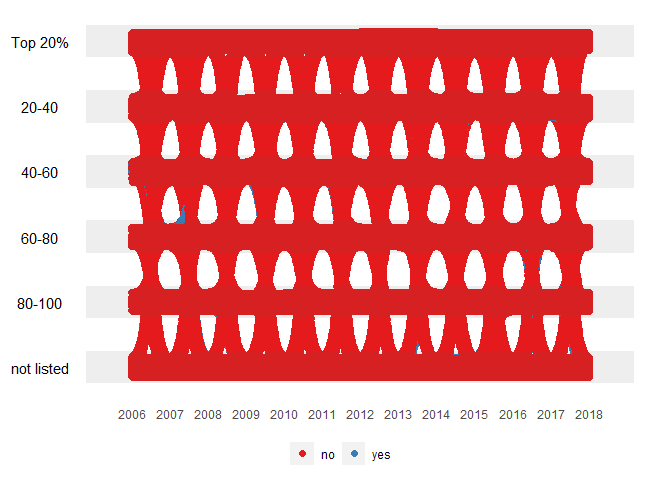
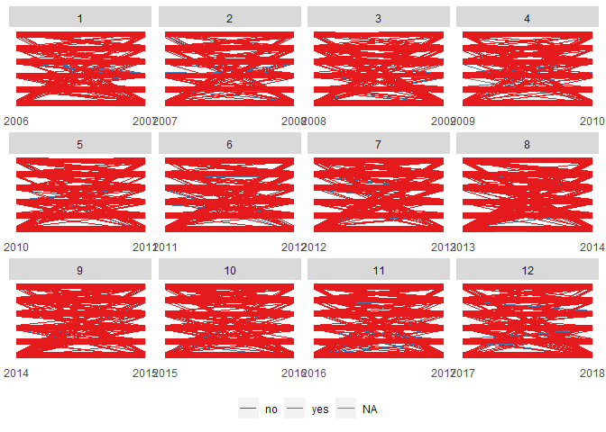

“animbook” is a package to help the user visualize the movement of the observations over time. It is a package to help prep the data, plot, and animate.
Installation
You can install the development version of animbook from GitHub with:
# install.packages("devtools")
devtools::install_github("KrisanatA/animbook")Usage
We will be using the dataset provided by the package osiris. There are three stages in this package that the users need to follow.
First stage: Prepare the data
In this stage, we first need to prepare the data structure to a specific format. This function will assign a frame, calculate the scaling, and create the necessary data and settings for the next stage.
The data needs to contain the following variable for the function to work:
- id:
firmID, it needs to be a factor variable. - values:
sales, it need to be a numeric variable. - time:
year, it needs to be an integer variable.
animbook <- anim_prep(osiris, firmID, sales, year)There are also additional options that allow the user to customize.
- label: group labeling.
- ngroup: number of groups we want to split the values into.
- breaks: the group bins size (prototype)
- group_scaling: the grouping variable for the bins calculations.
- color: the variable used to color the observations.
- time_dependent: logical. Whether we want the observations to start at the same time or not.
- scaling: the scaling method, either
rankorabsolute. - runif_min: minimum value for random addition to frame numbers
- runif_max: maximum value for random addition to frame numbers
The function can calculate four different scales using these options.
# rank scaling
rank_scaling <- anim_prep(data = osiris, id = firmID, values = sales, time = year)
# absolute scaling
absolute_scaling <- anim_prep(data = osiris, id = firmID, values = sales, time = year,
scaling = "absolute")
# rank scaling by group
rank_group_scaling <- anim_prep(data = osiris, id = firmID, values = sales, time = year,
group = country)
# absolute scaling by group
absolute_group_scaling <- anim_prep(data = osiris, id = firmID, values = sales, time = year,
group = country, scaling = "absolute")
rank_scaling
#> $data
#> # A tibble: 10,270 × 4
#> id time qtile frame
#> <fct> <int> <dbl> <int>
#> 1 1&1 VERSATEL GMBH DE2011730431 2006 2 1
#> 2 1&1 VERSATEL GMBH DE2011730431 2007 2 2
#> 3 1&1 VERSATEL GMBH DE2011730431 2008 2 3
#> 4 1&1 VERSATEL GMBH DE2011730431 2009 2 4
#> 5 1&1 VERSATEL GMBH DE2011730431 2010 2 5
#> 6 1&1 VERSATEL GMBH DE2011730431 2011 2 6
#> 7 1&1 VERSATEL GMBH DE2011730431 2012 0 7
#> 8 1&1 VERSATEL GMBH DE2011730431 2013 0 8
#> 9 1&1 VERSATEL GMBH DE2011730431 2014 0 9
#> 10 1&1 VERSATEL GMBH DE2011730431 2015 0 10
#> # ℹ 10,260 more rows
#>
#> $settings
#> $settings$gap
#> [1] 1.2
#>
#> $settings$xbreaks
#> [1] 2006 2007 2008 2009 2010 2011 2012 2013 2014 2015 2016 2017 2018
#>
#> $settings$label
#> [1] "5" "4" "3" "2" "1" "0"
#>
#> $settings$scaling
#> 0% 20% 40% 60% 80% 100%
#> 1 93 185 277 369 567
#>
#>
#> attr(,"class")
#> [1] "animbook"This function will return animbook object containing a list of the formatted data and settings.
Second stage: Plotting the data
After preparing the data, we can not plot it. There are three plots available in this package:
-
kangaroo, which plots the observation’s movement over time. -
wallaby, which subset the plot to eithertoporbottomand see which group they are in after the observational period. -
funnel_web_spider, which is a faceted plot by time variable.
animbook <- anim_prep(data = osiris, id = firmID, values = sales, time = year, color = japan)
# kangaroo plot
anim_plot(animbook, plot = "kangaroo")
# wallaby plot
anim_plot(animbook, plot = "wallaby")
# funnel web spider plot
anim_plot(animbook, plot = "funnel_web_spider")
The kangaroo and wallaby plots can be animated using the function of the next stage. funnel_web_spider only supported static plot. We can also choose whether we want to animate the plot using gganimate or plotly.
Third stage: Animating the plot
To animate the plot, we need to save the plot into an object, which then can be passed on to the function.
animbook <- anim_prep(data = osiris, id = firmID, values = sales, time = year, color = japan)
p <- anim_plot(animbook, plot = "wallaby", width = 0.01)
p2 <- anim_animate(p)
#> You can now pass it to gganimate::animate()
gganimate::animate(p2)